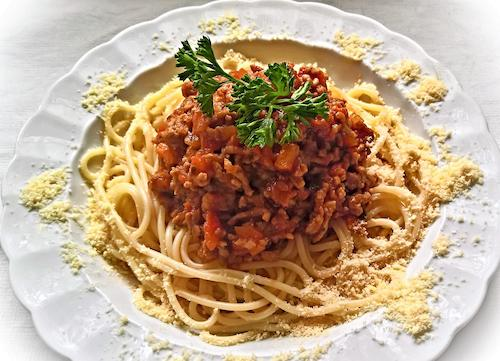

Bolognese

Description
Never buy a jar of pasta sauce again! This simple bolognese sauce recipe will bolowyour mind!
Ingredients
- 2 tablespoons olive oil
- 1 medium onion, diced
- 1 clove garlic, minced
- 1 pound lean ground beef
- 1 (28 ounce) can crushed tomatoes
- ½ teaspoon dried basil
- ½ teaspoon dried oregano
- salt and pepper to taste
- 1 pound pasta
Steps
- Bring a large pot of lightly salted water to a boil.
- Heat a large skillet at medium heat, add oil and saute onion. After a few minutes when onion nearly reaches desired softness, add minced garlic, stir with onion and push to side of pan. Brown beef in same pan adding salt and pepper. Drain off excess fat. Add tomatoes, basil, and oregano. Reduce heat and simmer
- Add pasta to boiling water and follow directions or cook until al dente. Set aside a few cups of pasta water and drain the rest.
- Add pasta water to sauce as needed for consistency.
- Serve sauce over hot pasta.